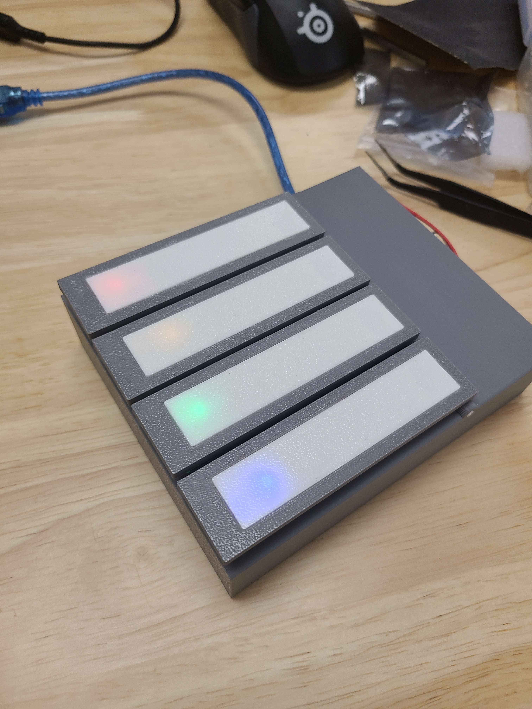
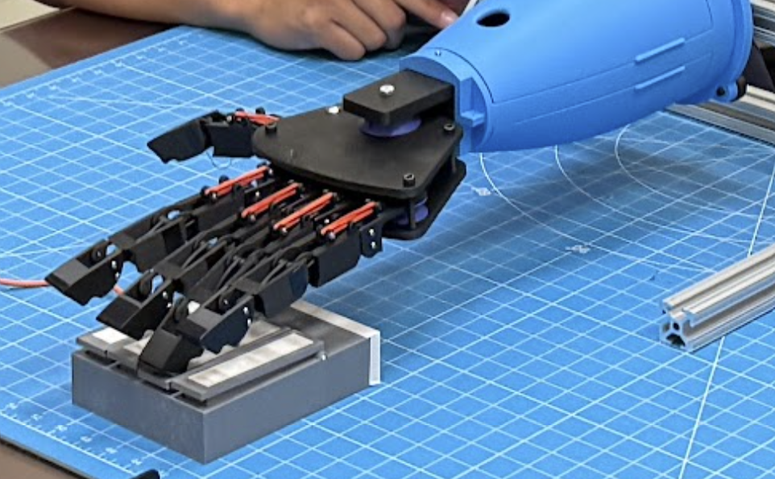

HAND ERC Dexterous Design Challenge
Co-founded and led an 8-week university-wide competition in which undergraduate teams built 11-DOF robotic hands and wrists.

[Final hands from the spring 2026 competition, held April 2026]
Motivation
Dexterous robotics is a rapidly growing and vital area in research and industry, but knowing how to get started is challenging, especially for undergraduates. The HAND ERC Dexterous Design Challenge, (DDC) was created to change that. This competition gives students from any major the chance to design, build, and test a functional multi-DOF robotic hand and wrist over the course of eight weeks. Participants are provided learning modules and resources to this end, with the target of the competition to be an annual national event that will include industry and graduate opportunities to the participants.
What I did
As co-founder and coordinator, I drove a large portion of the competition's organization and execution:
- Designed the initial forearm and assembled the required build kits for each team
- Developed significant portions of the competition rulebook and dexterity benchmarks used to evaluate the final builds
- Created learning modules and ran in-person workshops on dexterous design, electronics, CAD, and programming
- Organized informational sessions, kit distribution, team check-ins, and communications across all teams
- Co-coordinated the two-day final championship. Including graduate-student judges, high-school volunteers, evaluation testbeds, and catering
The competition drew 113 participants on 20 teams from 19 academic majors, with 8 teams completing the final design.


[Custom Simon Says/Piano Keys Task Testbench]
The Competition
Teams were scored on design, speed, and accuracy across three dexterity benchmarks:
- Object pick-and-place — grasping and relocating objects of varying sizes
- ASL signing — forming American Sign Language letters with the robotic hand
- Simon Says — responding to commanded finger poses in sequence
Awards were given for Engineering Excellence (1st, 2nd, 3rd place), Best Design, Best Presentation, and a Judges Award. Texas A&M graduate students served as judges, and local high-school students volunteered, expanding the influence of the competition to beyond undergradautes alone.
Outcome
The DDC demonstrated that undergraduates with no prior robotics experience can build functional dexterous robots when given the right structure and support. The competition's design and results became the basis of an academic paper.
I am first author on the resulting paper, accepted to the 2026 IEEE International Conference on Engineering, Technology, and Education (ICELIE), October 18–21. I contributed to both the technical work and manuscript writing.
Co-founded with Zavier Dollaway.